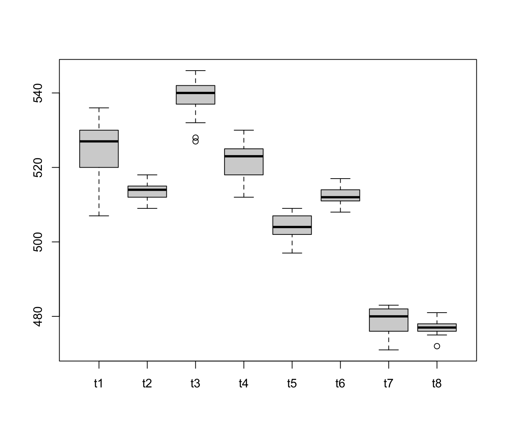

boiler.RdTemperature readings from the eight configured burners on a boiler.
data(boiler)
A data frame with 25 observations on the following 8 variables:
temperature reading 1
temperature reading 2
temperature reading 3
temperature reading 4
temperature reading 5
temperature reading 6
temperature reading 7
temperature reading 8
Mason, R.L. and Young, J.C. (2002) Multivariate Statistical Process Control with Industrial Applications, SIAM, p. 86.
#> Obs Mean StdDev Min Median Max #> t1 25 525.0 7.348 507 527 536 #> t2 25 513.6 2.200 509 514 518 #> t3 25 538.9 4.795 527 540 546 #> t4 25 521.7 4.723 512 523 530 #> t5 25 503.8 3.379 497 504 509 #> t6 25 512.4 2.123 508 512 517 #> t7 25 478.7 3.410 471 480 483 #> t8 25 477.2 1.964 472 477 481boxplot(boiler)